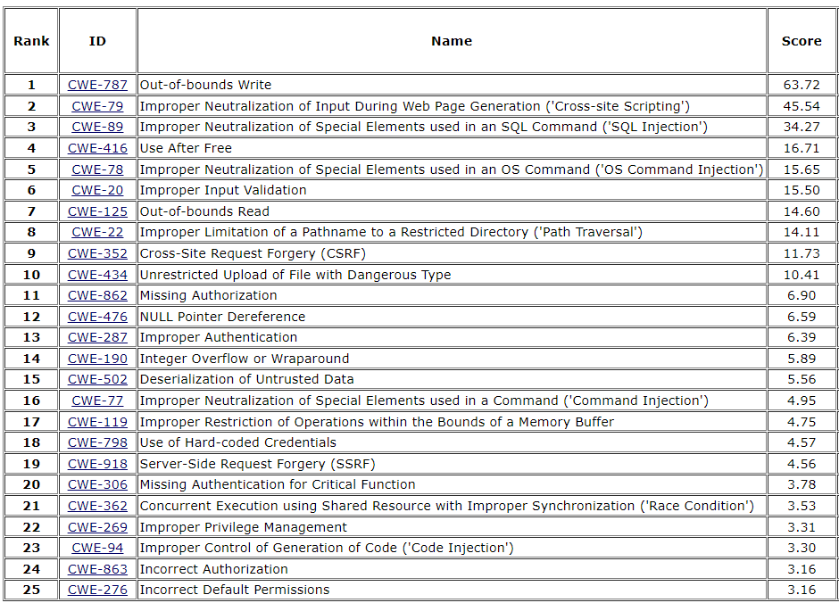

Software risk can never be reduced to zero. Even software
developed with high-security programs will undoubtedly include unintentional defects
that result in the degradation of confidentiality, integrity, and availability of
production software systems. However, these security defects should likely be
considered zero days—an attack that exploits a previously unknown hardware,
firmware, or software vulnerability. If software weaknesses are known and documented
with the security community, using various databases such as MITRE CWE, then
software assurance efforts throughout the software implementation phase should
prevent those defects from being incorporated into an organization’s source
repository.
Objectives
Identify software weaknesses listed in the most common vulnerability lists and
databases.
Describe the function and methods of software assurance tools.
Overview
To manage known software risks they must first be documented.
The collection of CWEs represents known weaknesses that when left unaddressed will
result in vulnerabilities. CWEs provide a means to analyze source code security
during development. Once a software system is fielded with defects, realized
weaknesses in specific software are considered vulnerabilities stored as CVEs within
the National Vulnerability Database (NVD). Using both together provides a means to
understand software risks during various life cycle stages.
Vulnerability Databases and
Lists
It has been stated that a successful attack involves the
existence of a susceptibility, access to the susceptibility, and finally the
capability to exploit the susceptibility.
Vulnerability databases and lists maintain information about
discovered vulnerabilities that target information systems. In addition to the
description of the vulnerability, other information maintained may include an
assessment of the potential damage, workarounds, and associated remediation
strategies.
In this section, NVD, CVE, CWE, and CAPEC will be discussed,
followed by OWASP.
National Vulnerability Database
(NVD)
NVD is the U.S. government’s repository of standards-based
vulnerability management data represented using the Security Content Automation
Protocol (SCAP). This data enables automation of vulnerability management, security
measurement, and compliance. The NVD includes databases of security checklist
references, security related software flaws, misconfigurations, product names, and
impact metrics.
The NVD is the CVE List augmented with additional analysis, a
database, and a fine-grained search engine. The NVD is synchronized with CVE such
that any updates to CVE appear immediately on the NVD.13
CWE™ is a community-developed list of common software and
hardware security weaknesses. It serves as a common language, a measuring stick for
security tools, and as a baseline for weakness identification, mitigation, and
prevention efforts. Each individual CWE represents a single vulnerability type. CWE
is currently maintained by the MITRE Corporation.
The Common Weakness Enumeration (CWE™) Top 25 Most Dangerous
Software Errors (CWE Top 25) is a demonstrative list of the most widespread and
critical weaknesses that can lead to serious vulnerabilities in software. These
weaknesses are often easy to find and exploit. They are dangerous because they will
frequently allow adversaries to completely take over the execution of software,
steal data, or prevent the software from working. The CWE Top 25 is a community
resource that can be used by software developers, software testers, software
customers, software project managers, security researchers, and educators to provide
insight into some of the most prevalent security threats in the software
industry.14
Common Vulnerabilities and Exposures
(CVE)
CVE is a dictionary that provides definitions for publicly
disclosed cybersecurity vulnerabilities and exposures. The goal of CVE is to
facilitate the sharing of data across separate vulnerability capabilities (tools,
databases, and services) with these definitions. CVE entries are comprised of an
identification number, a description, and at least one public
reference.15
The CVE List is built by CVE Numbering Authorities (CNAs). Every
CVE entry added to the list is assigned by a CNA.
CVE Numbering Authorities (CNAs) are organizations from around
the world that are authorized to assign CVE IDs to vulnerabilities affecting
products within their distinct, agreed-upon scope, for inclusion in first-time
public announcements of new vulnerabilities. These CVE IDs are provided to
researchers, vulnerability disclosers and information technology vendors.
The CVE List feeds the U.S. National Vulnerability Database
(NVD).
Common Attack Pattern Enumeration and
Classification (CAPEC)
Developed by leveraging CWE and CVE, CAPEC is a comprehensive
dictionary and classification taxonomy of known attacks that can be used by
analysts, developers, testers, and educators to advance community understanding and
enhance defenses.16
14 CWE; 2023 CWE Top 25 Most Dangerous Software
Weaknesses; https://cwe.mitre.org/; retrieved July 2023.
The Open Web Application Security Project (OWASP) is a nonprofit
foundation that works to improve the security of software.17
OWASP provides numerous resources to address the needs of
various software security stakeholders in each phase of the software-development
life cycle. Providing an exhaustive list of these resources is not possible in this
course, but a partial list (in no specific order) includes:
OWASP Software Assurance Maturity Model (SAMM)
OWASP Application Security Verification Standard (ASVS)
OWASP Cheat Sheet Series
OWASP Code Review Guide
OWASP Testing Guide
Top 10 lists from OWASP (in no specific order) include:
Top 10 Web Application Security Risks
Top 10 Proactive Controls
Top 10 Mobile Risks
API Security Top 10
OWASP Top 10 Web Application Security
Risks
The OWASP Top
1018 is a standard awareness document for developers and web
application security. It represents a broad consensus about the most critical
security risks to web applications.
At the time of
this writing, the Top 10 Web Application Security Risks included the
following:
2021-Broken Access
Control. Thirty-four CWEs mapped to Broken Access Control were the
most prevalent defect.
2021-Cryptographic
Failures. Failures related to cryptography can lead to sensitive
data exposure or system compromise.
2021-Injection.
Thirty-three CWEs mapped to injection and represent the second most frequent
defect. Cross-site scripting is now included.
2021-Insecure Design.
New in 2021, focuses on risks related to design flaws. Highlights the
importance of software security throughout the lifecycle.
2021-Security
Misconfiguration. Most applications tested suffered from
misconfiguration which correlates with business drivers for configurability
and reuse of modern software. XML External Entities (XXE) are now included
in this category.
2021-Vulnerable and
Outdated Components. Changed from “Using Components with Known
Vulnerabilities” and is a known issue that security practitioners struggle
to test and assess risk.
2021-Identification and
Authentication Failures. Changed from “Broken Authentication” and
now includes CWEs that are related to identification failures.
2021-Software and Data
Integrity Failures. New in 2021, focuses on assumptions related to
software updates and CI/CD pipelines without guaranteeing integrity.
2021-Security Logging and
Monitoring Failures. Changed from “Insufficient Logging &
Monitoring” and now includes types of failures which directly impact
visibility, incident alerting, and forensics.
2021-Server-Side Request
Forgery. Included based on member surveys indicating importance
despite data indicating low incidence rate and above average test
coverage.
As stated earlier, CWE Top 25 is a list of the most widespread
and critical weaknesses that can lead to serious vulnerabilities in software. The
current list (2023) is presented in this table:

Table 1: Weaknesses in the 2023 CWE Top 25
Buffer Overflows
Buffer overflows are a common software vulnerability in numerous
products, both commercial and open source. They have led to exploits including
malicious code execution or denial-of-service attacks. As described in Common
Weakness Enumeration (CWE):
“A buffer overflow condition exists when a program attempts to
put more data in a buffer than it can hold, or when a program attempts to put data
in a memory area outside of the boundaries of a buffer. The simplest type of error,
and the most common cause of buffer overflows, is the classic case in which the
program copies the buffer without restricting how much is copied.”19
A good example of this classic case is the function “strcpy (…)”
from the standard library of C/C++, which will copy a string from one memory
location to another without regard to the destination buffer size. There are many
more functions like this in the standard library.
From a discoverability and exploitability perspective, OWASP
suggests that buffer overflows are not easy to discover, and even when one is
discovered, it is generally extremely difficult to exploit. Nevertheless, attackers
have managed to identify buffer overflows in a staggering array of products and
components.
Variations of this problem exist in terms of stack overflow,
heap overflow, and other processes. Nonetheless, this issue is primarily associated
with languages such as C/C++, where the language was designed with certain
flexibility requirements and objectives in mind (e.g., the ability for direct memory
manipulation through pointers and pointer operations).
Buffer overflow can lead to severe memory issues; it may even
crash the system. Attackers may also use this vulnerability to execute arbitrary
code, which can lead to compromise in confidentiality, integrity, and availability
security objectives.
From the basic description of this vulnerability described
above, the following is a list of a few prevention strategies for buffer overflow:
Validation of input
Buffer boundary checking and enforcement
Avoiding use of unsafe APIs
Buffer Overflow in Action
CWE-121: Stack Based Buffer Overflow is an example of a relevant
CWE that describes a condition where the buffer being overwritten is allocated on
the stack. Stack overflow is commonly used interchangeably with the more proper
phrasing “stack-based buffer overflow” but may also reference resource exhaustion.
The example function below allocates a 64-byte buffer to store a client machine
name. This is a weakness though because there is no guarantee the client machine
name will be less than 64 bytes. If an adversary willfully specifies a large
name—the function below may overwrite data or give undo access to the threat.
Figure 9: Possible Stack-Based Buffer Overflow in C
Secure Code Reuse
OWASP Top 10 contains an entry on the risk of using components
with known vulnerabilities. OWASP Dependency-Check and Dependency-Track tools can
help identify publicly disclosed vulnerabilities and reduce the risk of using
third-party and open-source components.
OWASP Dependency-Check
OWASP Dependency-Check is a Software Composition Analysis (SCA)
tool that attempts to detect publicly disclosed vulnerabilities contained within a
project’s dependencies. It does this by determining whether there is a Common
Platform Enumeration (CPE) identifier for a given dependency. If found, it will
generate a report linking to the associated CVE entries. Dependency-check
automatically updates itself using the NVD Data Feeds hosted by NIST.20
OWASP Dependency-Track
Dependency-Track is an intelligent Supply Chain Component
Analysis platform that allows organizations to identify and reduce risk from the use
of third-party and open-source components. Dependency-Track takes a unique and
highly beneficial approach by leveraging the capabilities of Software
Bill-of-Materials (SBOM). This approach provides capabilities that traditional
Software Composition Analysis (SCA) solutions cannot achieve.
Dependency-Track monitors component usage across all versions of
every application in its portfolio in order to proactively identify risk across an
organization. The platform has an API-first design and is ideal for use in
Continuous Integration (CI) and Continuous Delivery (CD) environments.21
OWASP Dependency-Track can help identify multiple forms of risk
including:
, commonly abbreviated
as SwA, is the level of confidence that software is free from vulnerabilities,
either intentionally designed into the software or accidentally inserted at any time
during its life cycle, and that the software functions as intended by the purchaser
or user. Security practitioners have several tool capabilities to analyze software
source code for risks. The following table provides an overview of tool types.
Tool
Type
Capability
Description
Architectural
Analysis
Configuration
Analysis
A good SCM plan includes the secure, baseline configurations of
software. Documenting and enforcing these secure baseline standards
helps to reduce the attack surface of the software.
Component
Decomposition
Many software products have dependencies, existing components, and
coupled modules that are delivered as part of the application, often
not readily transparent to the user. In these cases, Component
Decomposition is necessary prior to other forms of analysis.
Software Supply
Chain Analysis
Some manufacturers have a pedigree of fixing issues, maintaining
community transparency, and making wise security decisions. By
analyzing a software manufacturer’s history, a proper level of
iterative assessment of its products can be established.
Software
Assurance Cases
An assurance case includes a top-level claim for a property of a
system or product (or set of claims), systematic argumentation
regarding this claim, and the evidence and explicit assumptions that
underlie this argumentation.
Dynamic Analysis
Specialized
Application Testing
Many types of applications can be attacked in ways that are unique
from other types. Specialized application testing includes Web
Application Analysis, Database Analysis, and Functional Testing.
Each of these levels of testing must optimally, include testing for
potentially exploitable vulnerabilities in the application.
Dynamic Binary
Analysis
When an application binary is executed, usually in a sandboxed
environment, a dynamic binary analysis can record and verify the
behaviors of the binary, specifically for potential vulnerabilities.
Dynamic Source
Analysis
Many interpreted languages, especially those that are popular for
use in web applications and maintenance scripts, can be debugged and
analyzed dynamically.
Static Analysis
Static Binary
Analysis
Application binaries that are not executed directly can be
decompiled and disassembled into control flow graphs and processor
instructions that can then be analyzed.
Static Source
Analysis
When source code is available, it can be reviewed for defects and
weaknesses.
Table 2: Overview of tool types.
Architectural and Design
Analysis
Architectural Analysis refers to the system architecture,
requirements, and design that comprise an application development life cycle. While
the system’s mission and environment are more closely aligned with Mission
Assurance, the specific software components that make up a mission must be secured.
A thorough Architectural Analysis is conducted in four main areas: Configuration
Analysis, Component Decomposition, Software Supply Chain Analysis, and Open Sources
Analysis.
Configuration Analysis. Software components can be configured in an
insecure way, so it is important to monitor the configuration on a regular
basis. It is also important to verify that a secure baseline for an application
exists. This can prevent attackers from using legitimate software features to
enact exploits on a system. Many software components include hardening
guidelines that should be followed and evaluated during security testing. A
Software Configuration Management (SCM) policy should include all hardening
guidelines and application-specific configuration options to operate the
software in a known, secure state.
Component Decomposition. In the realm of composition analysis,
component decomposition extracts dependencies from even cryptic pieces of
software. A good composition analysis platform will perform Software Supply
Chain Analysis and Open Sources Analysis after unpacking/decomposing the
software.
Software Supply Chain Analysis. Software Supply Chain Analysis
determines the lineage of a software product. Many Software Supply Chain
Analysis techniques use a component’s popularity and history of fixing security
issues to determine a pedigree score for a manufacturer or product. If the
software hasn’t been used or trusted before, has an unverifiable origin, or has
not been maintained with security updates, it imposes higher risks to the
application. Software Supply Chain Analysis also includes verifying that the
dependency in use within the software product is the correct one coming from the
origin under analysis. The component under analysis is also checked for license
compliance by making sure that OSS licenses are not violated and that commercial
licenses are being used appropriately. Software Supply Chain Analysis is often
performed as an extra step after Component Decomposition.
Software Assurance Cases. An assurance case is a practical alternative
to an overwhelming list or other unstructured methods for recording what was
done or not done in a way that can lead to greater confidence in the result. An
assurance case includes a top-level claim for a property of a system or product
(or set of claims), systematic argumentation regarding this claim, and the
evidence and explicit assumptions that underlie this argumentation. Arguing
through multiple levels of subordinate claims, this structured argumentation
connects top-level claims to evidence and assumptions.
Dynamic Analysis
tools analyze applications in their dynamic running state during testing or
operational phases. They simulate attacks against an application (typically
web-enabled applications, services, and APIs), analyze the application’s reactions,
and determine whether it is vulnerable. DAST tools go one step further than SAST and
spin up a copy of the production environment inside the CI job to scan the resulting
containers and executables. The dynamic aspect helps the system catch dependencies
that are being loaded at launch time, such as those that would not be caught by
SAST.22 When the software is scanned during execution, even if only
partial portions of the code are executed, a dynamic analysis is being conducted.
Hybrid, concolic, symbolic, and simulated execution methods are included as dynamic
analysis techniques. While dynamic analysis is typically associated with binary
analysis, interpreted languages can be executed to perform certain analysis.
Specialized Application Testing. Many applications provide specialized
tools for penetration testing and analysis. When developers or business
stakeholder constructs use cases, they create specialized testing tools for
their application. These testing tools and environments must include testing
that is specifically designed to elicit the behaviors that may occur when secure
coding best practices are not optimal, and a potential vulnerability were to be
exploited. An application that has unit tests, functional test cases, and
acceptance criteria should document how to perform tests to verify not only the
functionality of the code, but evidentiary behavior were a vulnerability in the
code to be exploited. When a test fails, each test should be documented for its
potential security impact on the software.
Dynamic Binary Analysis. Scanning a binary for weaknesses by executing
it (usually in a sandboxed environment) can help an analyst quickly observe and
determine anomalous behavior in an application. Dynamic binary analysis is
useful whether or not access to an application’s source code is available.
Dynamic Source Analysis. Some tools interpret source code for analysis
or analyze source code while performing a dynamic analysis of an application.
tools analyze an application’s source, bytecode, or binary code for
security vulnerabilities, typically at the programming and/or testing software life
cycle (SLC) phases. Specifically, this technology involves techniques that look
through the application in a commit and analyze its dependencies. If any
dependencies contain issues or known security vulnerabilities, a commit will be
marked as insecure and will not be allowed to proceed to deployment. This can also
include finding hardcoded passwords/secrets in code that should be
removed.23 Static analysis enables an application to be assessed without
executing it. Static analysis techniques use software source code, build processes,
binaries, and metadata to perform testing.
Static Binary Analysis. Static binary analysis operates on a binary
without utilizing the application’s source code. Static binary analysis looks
for programmatic weaknesses in executable code, often using the experience of a
subject matter expert.
Static Source Analysis. Static source analysis scans software code for
weaknesses. In some cases, static source analysis tools require the software to
build in order to reveal the composition of data structures, control flow
graphs, and dependencies with linked components. Once the analysis platform
exposes the structure of these resources, it can analyze their usage directly in
source code without executing the software.
Interactive Application Security
Testing (IAST)
tools combine elements of DAST with instrumentation of the application
under test. They are typically implemented as an agent within the test runtime
environment (e.g., instrumenting the Java Virtual Machine [JVM] or .NET CLR) that
observes operations or identifies and attacks vulnerabilities.24 Best
suited for web applications and web APIs, IAST aims to perform behavioral analysis.
It relies on a combination of SAST and DAST to achieve its goal through its
visibility into both the source code and the execution flow during the runtime.
Software Assurance Tools Mapped to
SDLC
While the consequences of exploitable vulnerabilities are
realized during the operation and maintenance phases of the SDLC, the actions of
anticipating, preventing, identifying, mitigating, and remediating exploitable
vulnerabilities must take place throughout the entire process. To ensure exploitable
vulnerabilities are identified and mitigated prior to software deployment, SwA
processes must be applied throughout the entire SDLC. The following table provides a
list of recommended SwA capabilities to be applied during each phase of the SDLC.
Each SDLC phase is further defined in ISO/IEC 15288: Systems and Software
Engineering—System Life Cycle Processes.
23 Ibid.
24 Ibid.
SDLC Phase
Capability
Description
Architectural Design
Configuration
Analysis
If the foundation of the system is bad, then it will be nearly
impossible to make the final product secure. That is why it is
critical during the design phase to ensure certain baseline security
standards are followed.
A significant portion of the SwA work will be performed during these
middle phases of development. To prevent exploitable vulnerabilities
from reaching production, the system should be thoroughly tested and
analyzed.
While the software is in operation, the opportunity for SwA
activities includes analyzing for misconfigurations and running
specialized tests that do not interfere with operation.
SwA during the maintenance phase should look similar to the
implementation through validation phases, with each new bug fix,
updates and feature release being thoroughly tested and analyzed to
ensure no exploitable vulnerabilities are introduced.
Table 3: Recommended SwA Capabilities
Security Code Review
Security code reviews are a combination of human effort and
technological support. When resources are limited, it becomes essential to
prioritize what features and components must be securely reviewed with a risk-based
approach. Secure code review is probably the single most effective technique for
identifying security bugs early in the system development life cycle. When used
together with automated and manual penetration testing, code review can
significantly increase the cost-effectiveness of an application security
verification effort.
The objective of code review is to detect development errors
that may cause vulnerabilities and hence give rise to an exploit. Code review can
also be used to measure the progress of a development team in their practice of
secure application development. It can pinpoint areas where the development practice
is weak, areas where secure development practice is strong, and give a security
practitioner the ability to address the root cause of the weaknesses within a
developed solution. It may give rise to investigation into software development
policies and guidelines and the interpretation of them by the users; communication
is the key.
Manual Security Code Review
Relying on tools in lieu of manual checks is not advised because
tools cannot completely emulate human experience and decision-making capabilities.
True indication of security maturity implies that the tool is part of a more
holistic security program and not just the sole measure to secure software.
The ability of human reviewers to understand context can lead to
more accurate estimates of the likelihood and impact of vulnerabilities’ discovery
and exploitation.
Much work goes into manual security code reviews; thus,
conducting this activity requires preparation to make it effective. Examples of the
type of preparation involved include developing an understanding of the business
purpose of the application and the most critical business impacts, understanding of
threat agents, motivations, and the threat targets (assets), and understanding the
attack surface.25
Code reviews are also frequently referred to as peer reviews.
Peer reviews involve the examination of source code authored by one developer by
peer developers.
Historically, development teams have relied on peer reviews to
produce software with fewer defects, ensure compliance with coding standards, share
knowledge among team members, and perform verification of consistency in
implementations.
Looking for Malicious Code
Software code, particularly when not developed in house (e.g.,
third-party code), must be subjected to secure code reviews and inspections where
possible, specifically to identify embedded malicious code. This includes logic
bombs and even backdoors that may have been left in place for legitimate reasons by
developers.
OWASP Application Security Verification Standard (ASVS) points
out the challenge with respect to finding malicious code: “Finding malicious code is
proof of the negative, which is impossible to completely validate. Best efforts
should be undertaken to ensure that the code has no inherent malicious code or
unwanted functionality.”26
The ASVS malicious code verification requirements offer guidance
in this regard. Following are a few examples:
Verify the use of a code analysis tool that can detect potentially malicious
code, such as time functions, unsafe file operations and network connections.
Verify that the application does not ask for unnecessary or excessive
permissions to privacy related features or sensors, such as contacts, cameras,
microphones, or location.
Verify that the application source code and third-party libraries do not contain
time bombs by searching for date and time-related functions.
Verify that the application source code and third-party libraries do not contain
malicious code, such as salami attacks, logic bypasses, or logic bombs.
Verify that the application source code and third-party libraries do not contain
Easter eggs or any other potentially unwanted functionality.
Backdoors
Maintenance hooks are implanted intentionally in development or
by error, usually by an insider. A maintenance hook may be deliberate and useful.
Software developers often introduce backdoors in their code to enable reentry to the
system and to perform certain functions; this is known as a maintenance hook. The
backdoor can be left in a fully developed system either by design or accident.
Logic Bombs
A logic bomb is malicious code hidden within software that is
set to activate under certain conditions. It is triggered when a specific event (or
series of events) occurs within the system. A logic bomb represents embedded
malicious code inside the source code of the software and is normally associated
with an insider threat.
Analyzing Code for Security Risks (5.2)
Software risk can never be reduced to zero. Even software developed with high-security programs will undoubtedly include unintentional defects that result in the degradation of confidentiality, integrity, and availability of production software systems. However, these security defects should likely be considered zero days—an attack that exploits a previously unknown hardware, firmware, or software vulnerability. If software weaknesses are known and documented with the security community, using various databases such as MITRE CWE, then software assurance efforts throughout the software implementation phase should prevent those defects from being incorporated into an organization’s source repository.
Objectives
Overview
To manage known software risks they must first be documented. The collection of CWEs represents known weaknesses that when left unaddressed will result in vulnerabilities. CWEs provide a means to analyze source code security during development. Once a software system is fielded with defects, realized weaknesses in specific software are considered vulnerabilities stored as CVEs within the National Vulnerability Database (NVD). Using both together provides a means to understand software risks during various life cycle stages.
Vulnerability Databases and Lists
It has been stated that a successful attack involves the existence of a susceptibility, access to the susceptibility, and finally the capability to exploit the susceptibility.
Vulnerability databases and lists maintain information about discovered vulnerabilities that target information systems. In addition to the description of the vulnerability, other information maintained may include an assessment of the potential damage, workarounds, and associated remediation strategies.
In this section, NVD, CVE, CWE, and CAPEC will be discussed, followed by OWASP.
National Vulnerability Database (NVD)
NVD is the U.S. government’s repository of standards-based vulnerability management data represented using the Security Content Automation Protocol (SCAP). This data enables automation of vulnerability management, security measurement, and compliance. The NVD includes databases of security checklist references, security related software flaws, misconfigurations, product names, and impact metrics.
The NVD is the CVE List augmented with additional analysis, a database, and a fine-grained search engine. The NVD is synchronized with CVE such that any updates to CVE appear immediately on the NVD.13
13 National Institute of Standards and Technology; National Vulnerability Database General FACs; https://nvd.nist.gov/general/FAQ-Sections/General-FAQs#7abed157-1ec6-45c9-9ef4-b923ae7824a7; retrieved July 2023.
Common Weakness Enumerations (CWE)
CWE™ is a community-developed list of common software and hardware security weaknesses. It serves as a common language, a measuring stick for security tools, and as a baseline for weakness identification, mitigation, and prevention efforts. Each individual CWE represents a single vulnerability type. CWE is currently maintained by the MITRE Corporation.
The Common Weakness Enumeration (CWE™) Top 25 Most Dangerous Software Errors (CWE Top 25) is a demonstrative list of the most widespread and critical weaknesses that can lead to serious vulnerabilities in software. These weaknesses are often easy to find and exploit. They are dangerous because they will frequently allow adversaries to completely take over the execution of software, steal data, or prevent the software from working. The CWE Top 25 is a community resource that can be used by software developers, software testers, software customers, software project managers, security researchers, and educators to provide insight into some of the most prevalent security threats in the software industry.14
Common Vulnerabilities and Exposures (CVE)
CVE is a dictionary that provides definitions for publicly disclosed cybersecurity vulnerabilities and exposures. The goal of CVE is to facilitate the sharing of data across separate vulnerability capabilities (tools, databases, and services) with these definitions. CVE entries are comprised of an identification number, a description, and at least one public reference.15
The CVE List is built by CVE Numbering Authorities (CNAs). Every CVE entry added to the list is assigned by a CNA.
CVE Numbering Authorities (CNAs) are organizations from around the world that are authorized to assign CVE IDs to vulnerabilities affecting products within their distinct, agreed-upon scope, for inclusion in first-time public announcements of new vulnerabilities. These CVE IDs are provided to researchers, vulnerability disclosers and information technology vendors.
The CVE List feeds the U.S. National Vulnerability Database (NVD).
Common Attack Pattern Enumeration and Classification (CAPEC)
Developed by leveraging CWE and CVE, CAPEC is a comprehensive dictionary and classification taxonomy of known attacks that can be used by analysts, developers, testers, and educators to advance community understanding and enhance defenses.16
14 CWE; 2023 CWE Top 25 Most Dangerous Software Weaknesses; https://cwe.mitre.org/; retrieved July 2023.
15 CVE; CVE List Home; https://cve.mitre.org/cve/; retrieved July 2023.
16 CVE, Related Efforts; https://cve.mitre.org/cve_cwe_capec_relationships; retrieved July 2023.
Open Web Application Security Project (OWASP)
The Open Web Application Security Project (OWASP) is a nonprofit foundation that works to improve the security of software.17
OWASP provides numerous resources to address the needs of various software security stakeholders in each phase of the software-development life cycle. Providing an exhaustive list of these resources is not possible in this course, but a partial list (in no specific order) includes:
Top 10 lists from OWASP (in no specific order) include:
OWASP Top 10 Web Application Security Risks
The OWASP Top 1018 is a standard awareness document for developers and web application security. It represents a broad consensus about the most critical security risks to web applications.
At the time of this writing, the Top 10 Web Application Security Risks included the following:
17 OWASP Foundation; About the OWASP Foundation; https://owasp.org/about/; retrieved 2023.
18 OWASP; OWASP Top 10; https://owasp.org/Top10/; Retrieved July 2023.
Other Common Application Vulnerabilities
As stated earlier, CWE Top 25 is a list of the most widespread and critical weaknesses that can lead to serious vulnerabilities in software. The current list (2023) is presented in this table:
Table 1: Weaknesses in the 2023 CWE Top 25
Buffer Overflows
Buffer overflows are a common software vulnerability in numerous products, both commercial and open source. They have led to exploits including malicious code execution or denial-of-service attacks. As described in Common Weakness Enumeration (CWE):
“A buffer overflow condition exists when a program attempts to put more data in a buffer than it can hold, or when a program attempts to put data in a memory area outside of the boundaries of a buffer. The simplest type of error, and the most common cause of buffer overflows, is the classic case in which the program copies the buffer without restricting how much is copied.”19
A good example of this classic case is the function “strcpy (…)” from the standard library of C/C++, which will copy a string from one memory location to another without regard to the destination buffer size. There are many more functions like this in the standard library.
From a discoverability and exploitability perspective, OWASP suggests that buffer overflows are not easy to discover, and even when one is discovered, it is generally extremely difficult to exploit. Nevertheless, attackers have managed to identify buffer overflows in a staggering array of products and components.
Variations of this problem exist in terms of stack overflow, heap overflow, and other processes. Nonetheless, this issue is primarily associated with languages such as C/C++, where the language was designed with certain flexibility requirements and objectives in mind (e.g., the ability for direct memory manipulation through pointers and pointer operations).
Buffer overflow can lead to severe memory issues; it may even crash the system. Attackers may also use this vulnerability to execute arbitrary code, which can lead to compromise in confidentiality, integrity, and availability security objectives.
From the basic description of this vulnerability described above, the following is a list of a few prevention strategies for buffer overflow:
Buffer Overflow in Action
CWE-121: Stack Based Buffer Overflow is an example of a relevant CWE that describes a condition where the buffer being overwritten is allocated on the stack. Stack overflow is commonly used interchangeably with the more proper phrasing “stack-based buffer overflow” but may also reference resource exhaustion. The example function below allocates a 64-byte buffer to store a client machine name. This is a weakness though because there is no guarantee the client machine name will be less than 64 bytes. If an adversary willfully specifies a large name—the function below may overwrite data or give undo access to the threat.
19 CWE; CWE-120: Buffer Copy without Checking Size of Input ('Classic Buffer Overflow'); https://cwe.mitre.org/data/definitions/120.html; retrieved July 2023.
Figure 9: Possible Stack-Based Buffer Overflow in C
Secure Code Reuse
OWASP Top 10 contains an entry on the risk of using components with known vulnerabilities. OWASP Dependency-Check and Dependency-Track tools can help identify publicly disclosed vulnerabilities and reduce the risk of using third-party and open-source components.
OWASP Dependency-Check
OWASP Dependency-Check is a Software Composition Analysis (SCA) tool that attempts to detect publicly disclosed vulnerabilities contained within a project’s dependencies. It does this by determining whether there is a Common Platform Enumeration (CPE) identifier for a given dependency. If found, it will generate a report linking to the associated CVE entries. Dependency-check automatically updates itself using the NVD Data Feeds hosted by NIST.20
OWASP Dependency-Track
Dependency-Track is an intelligent Supply Chain Component Analysis platform that allows organizations to identify and reduce risk from the use of third-party and open-source components. Dependency-Track takes a unique and highly beneficial approach by leveraging the capabilities of Software Bill-of-Materials (SBOM). This approach provides capabilities that traditional Software Composition Analysis (SCA) solutions cannot achieve.
Dependency-Track monitors component usage across all versions of every application in its portfolio in order to proactively identify risk across an organization. The platform has an API-first design and is ideal for use in Continuous Integration (CI) and Continuous Delivery (CD) environments.21
OWASP Dependency-Track can help identify multiple forms of risk including:
20 OWASP; OWASP Dependency Check; https://owasp.org/www-project-dependency-check/; retrieved 2023.
21 OWASP; OWASP Dependency-Track; https://owasp.org/www-project-dependency-track/; retrieved July 2023.
Software Assurance Tools
, commonly abbreviated as SwA, is the level of confidence that software is free from vulnerabilities, either intentionally designed into the software or accidentally inserted at any time during its life cycle, and that the software functions as intended by the purchaser or user. Security practitioners have several tool capabilities to analyze software source code for risks. The following table provides an overview of tool types.
Table 2: Overview of tool types.
Architectural and Design Analysis
Architectural Analysis refers to the system architecture, requirements, and design that comprise an application development life cycle. While the system’s mission and environment are more closely aligned with Mission Assurance, the specific software components that make up a mission must be secured. A thorough Architectural Analysis is conducted in four main areas: Configuration Analysis, Component Decomposition, Software Supply Chain Analysis, and Open Sources Analysis.
Dynamic Analysis
tools analyze applications in their dynamic running state during testing or operational phases. They simulate attacks against an application (typically web-enabled applications, services, and APIs), analyze the application’s reactions, and determine whether it is vulnerable. DAST tools go one step further than SAST and spin up a copy of the production environment inside the CI job to scan the resulting containers and executables. The dynamic aspect helps the system catch dependencies that are being loaded at launch time, such as those that would not be caught by SAST.22 When the software is scanned during execution, even if only partial portions of the code are executed, a dynamic analysis is being conducted. Hybrid, concolic, symbolic, and simulated execution methods are included as dynamic analysis techniques. While dynamic analysis is typically associated with binary analysis, interpreted languages can be executed to perform certain analysis.
22 National Institute of Standards and Technology; NIST SP.800-204C—Implementation of DevSecOps for a Microservices-based Application with Service Mesh; https://nvlpubs.nist.gov/nistpubs/SpecialPublications/NIST.SP.800-204C.pdf; retrieved July 2023.
Static Analysis
tools analyze an application’s source, bytecode, or binary code for security vulnerabilities, typically at the programming and/or testing software life cycle (SLC) phases. Specifically, this technology involves techniques that look through the application in a commit and analyze its dependencies. If any dependencies contain issues or known security vulnerabilities, a commit will be marked as insecure and will not be allowed to proceed to deployment. This can also include finding hardcoded passwords/secrets in code that should be removed.23 Static analysis enables an application to be assessed without executing it. Static analysis techniques use software source code, build processes, binaries, and metadata to perform testing.
Interactive Application Security Testing (IAST)
tools combine elements of DAST with instrumentation of the application under test. They are typically implemented as an agent within the test runtime environment (e.g., instrumenting the Java Virtual Machine [JVM] or .NET CLR) that observes operations or identifies and attacks vulnerabilities.24 Best suited for web applications and web APIs, IAST aims to perform behavioral analysis. It relies on a combination of SAST and DAST to achieve its goal through its visibility into both the source code and the execution flow during the runtime.
Software Assurance Tools Mapped to SDLC
While the consequences of exploitable vulnerabilities are realized during the operation and maintenance phases of the SDLC, the actions of anticipating, preventing, identifying, mitigating, and remediating exploitable vulnerabilities must take place throughout the entire process. To ensure exploitable vulnerabilities are identified and mitigated prior to software deployment, SwA processes must be applied throughout the entire SDLC. The following table provides a list of recommended SwA capabilities to be applied during each phase of the SDLC. Each SDLC phase is further defined in ISO/IEC 15288: Systems and Software Engineering—System Life Cycle Processes.
23 Ibid.
24 Ibid.
Integration
Verification
Validation
Component Decomposition
Software Supply Chain Analysis
Software Composition Analysis
Open-Source Analysis
Specialized Application Testing
Dynamic Binary Analysis
Dynamic Source Analysis
Static Binary Analysis
Static Source Analysis
Software Composition Analysis
Specialized Application Testing
Configuration Analysis
Component Decomposition
Software Supply Chain Analysis
Open Sources Analysis
Specialized Application Testing
Dynamic Binary Analysis
Dynamic Source Analysis
Static Binary Analysis
Static Source Analysis
Table 3: Recommended SwA Capabilities
Security Code Review
Security code reviews are a combination of human effort and technological support. When resources are limited, it becomes essential to prioritize what features and components must be securely reviewed with a risk-based approach. Secure code review is probably the single most effective technique for identifying security bugs early in the system development life cycle. When used together with automated and manual penetration testing, code review can significantly increase the cost-effectiveness of an application security verification effort.
The objective of code review is to detect development errors that may cause vulnerabilities and hence give rise to an exploit. Code review can also be used to measure the progress of a development team in their practice of secure application development. It can pinpoint areas where the development practice is weak, areas where secure development practice is strong, and give a security practitioner the ability to address the root cause of the weaknesses within a developed solution. It may give rise to investigation into software development policies and guidelines and the interpretation of them by the users; communication is the key.
Manual Security Code Review
Relying on tools in lieu of manual checks is not advised because tools cannot completely emulate human experience and decision-making capabilities. True indication of security maturity implies that the tool is part of a more holistic security program and not just the sole measure to secure software.
The ability of human reviewers to understand context can lead to more accurate estimates of the likelihood and impact of vulnerabilities’ discovery and exploitation.
Much work goes into manual security code reviews; thus, conducting this activity requires preparation to make it effective. Examples of the type of preparation involved include developing an understanding of the business purpose of the application and the most critical business impacts, understanding of threat agents, motivations, and the threat targets (assets), and understanding the attack surface.25
25 OWASP Foundation; Code Review Guide 2.0; https://owasp.org/www-pdf-archive/OWASP_Code_Review_Guide_v2.pdf; retrieved July 2023.
Peer Review
Code reviews are also frequently referred to as peer reviews. Peer reviews involve the examination of source code authored by one developer by peer developers.
Historically, development teams have relied on peer reviews to produce software with fewer defects, ensure compliance with coding standards, share knowledge among team members, and perform verification of consistency in implementations.
Looking for Malicious Code
Software code, particularly when not developed in house (e.g., third-party code), must be subjected to secure code reviews and inspections where possible, specifically to identify embedded malicious code. This includes logic bombs and even backdoors that may have been left in place for legitimate reasons by developers.
OWASP Application Security Verification Standard (ASVS) points out the challenge with respect to finding malicious code: “Finding malicious code is proof of the negative, which is impossible to completely validate. Best efforts should be undertaken to ensure that the code has no inherent malicious code or unwanted functionality.”26
The ASVS malicious code verification requirements offer guidance in this regard. Following are a few examples:
Backdoors
Maintenance hooks are implanted intentionally in development or by error, usually by an insider. A maintenance hook may be deliberate and useful. Software developers often introduce backdoors in their code to enable reentry to the system and to perform certain functions; this is known as a maintenance hook. The backdoor can be left in a fully developed system either by design or accident.
Logic Bombs
A logic bomb is malicious code hidden within software that is set to activate under certain conditions. It is triggered when a specific event (or series of events) occurs within the system. A logic bomb represents embedded malicious code inside the source code of the software and is normally associated with an insider threat.